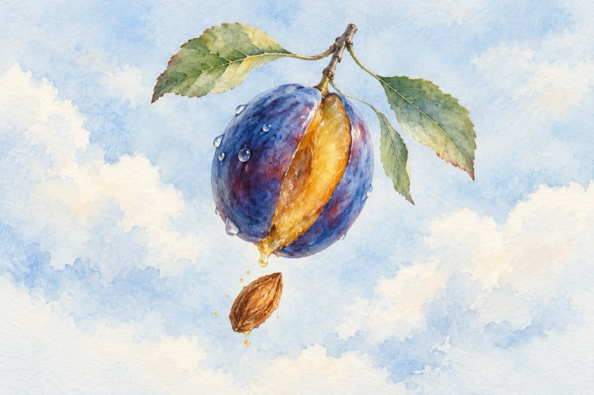

Pruna
Fabulă.
Tu mă crezi așa de proastă
Cum că nu știu că mă-mbrac,
Uite-mi rochia albastră
Și trei frunze din copac.
Unde mai pui și dulceața
Buzelor mele-ncărnate,
Sunt cum roua dimineața
În veșminte parfumate.
Toate-acestea i le spune
Unui sâmbure din ea
c-are n-are rost nici nume
doar că o incomoda.
Prea frumoasa mea copilă
Mie totu-mi datorezi
Și-aș vrea mult respect și milă
Vina ta-i că nu mă vezi.
Eu-ți sunt tată-ți sunt și mamă
Așa ai venit pe lume
Cum să nu mă bagi în seamă
Te-am crescut, ți-am dat un nume.
Pruna își desface haina
Și așa ca la poruncă
Fără să aibă vreo teamă
Sâmburele îl aruncă.
Morala
Când așchia își uită trunchiul
Și sare făr’ de măsură
Judecata o dă timpul
Verdict fără-ntorsătură.
Vasile Groza
Apare și în: Privește-mă în ochi (2018).